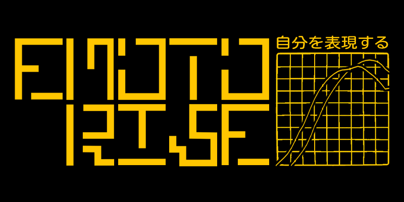
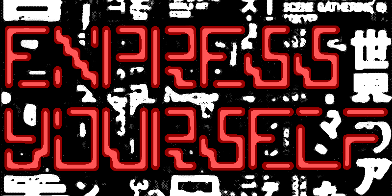
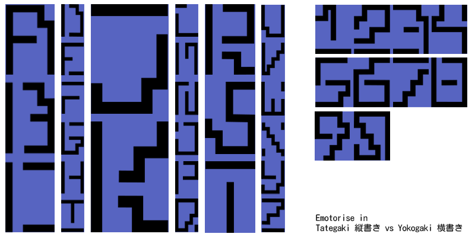
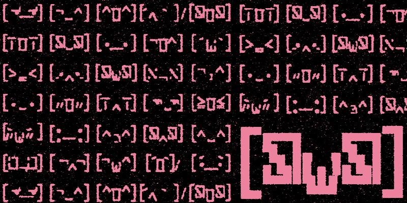

Emotorise.
Semester 2, 2025.
For the final assessment of Typography in Context we were tasked with developing a typeface from scratch. With crossing interests in Japanese culture and typographical conventions, our group researched and developed Emotorise, based on a 4x4 rectangular grid system and Japanese writing stroke.
Made in collaboration with: Ruichen Zang, Ruby Dahl and Maya Funnel.




Emotorise in action. Various banners made for Adobe Fonts repository.